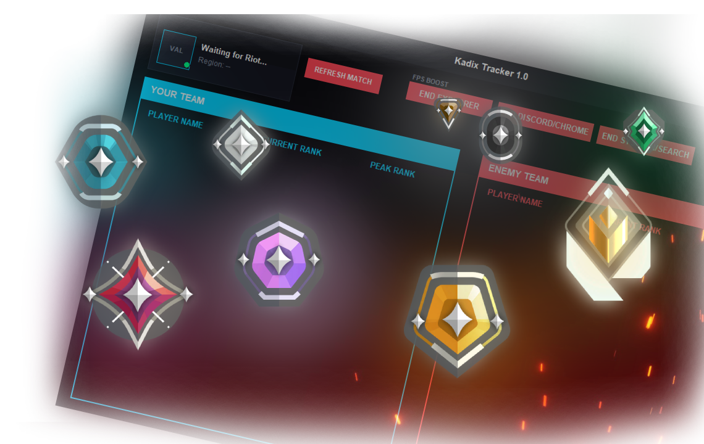
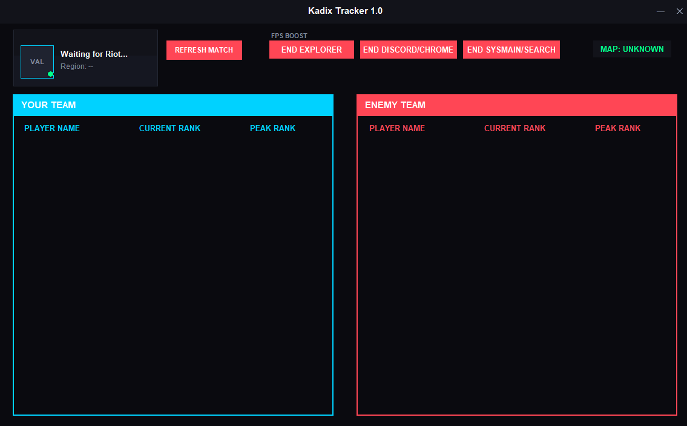
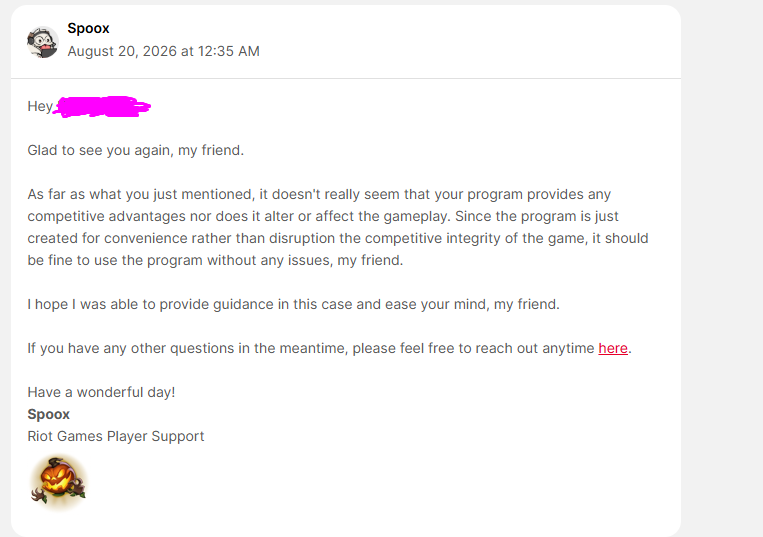

BETA v1.0
KADIX
TRACKER
For Valorant
A lightweight VALORANT tracker designed for performance, simplicity and low-end PCs.
⚡ ~40 MB RAM USAGE

FEATURES
LIGHTWEIGHT
Designed to consume very little RAM, making it suitable for low-end computers.
PLAYER STATS
View useful player and match information while playing VALORANT.
SIMPLE
A simple interface focused on performance without unnecessary features.
SCREENSHOTS

RIOT SUPPORT
Riot Games Player Support was contacted regarding the tracker and its functionality.
Their response is included below for transparency.

This project is independent and is not affiliated with or officially endorsed by Riot Games.
READY TO TRY?
Download Kadix VALORANT Tracker Beta v1.0.
DOWNLOAD BETA